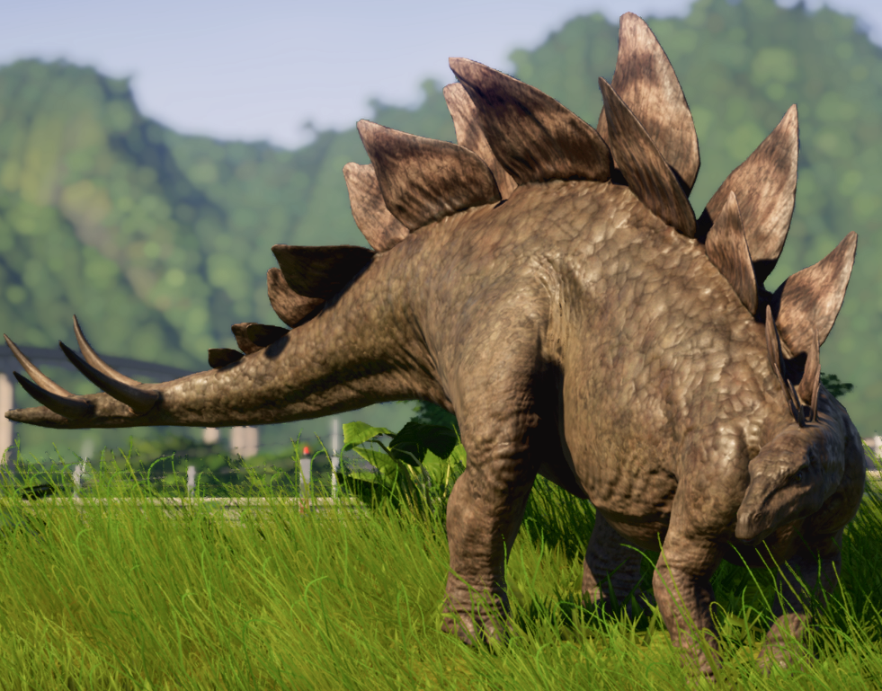

| Strona główna | Era dinozaurów | Dinozaur miesiąca |
"zadaszony jaszczur"

Duży, wolno poruszający się roślinożerca, mógł się bronić przed drapieżnikami za pomocą mocnego, najeżonego kolcami ogona, podobnie jak Allozaur. Na grzbiecie miał kostne płyty, które mogły służyć do odstraszania napastników, ale uniemożliwiałyby także rozpoznawanie się osobnikom tego samego gatunku. Przypuszcza się, że służyły również do regulowania temperatury ciała. Stegozaur miał stosunkowo małą głowę i mózg wielkości śliwki.
Długość: 9m Dieta: roślinożerny Znaleziony: USA
Kiedy żył: późna jura (156-144 milionów lat temu)
Zgłoś swojego ulubionego dinozaura na dinozaura miesiąca!
Formularz zgłoszeniowy